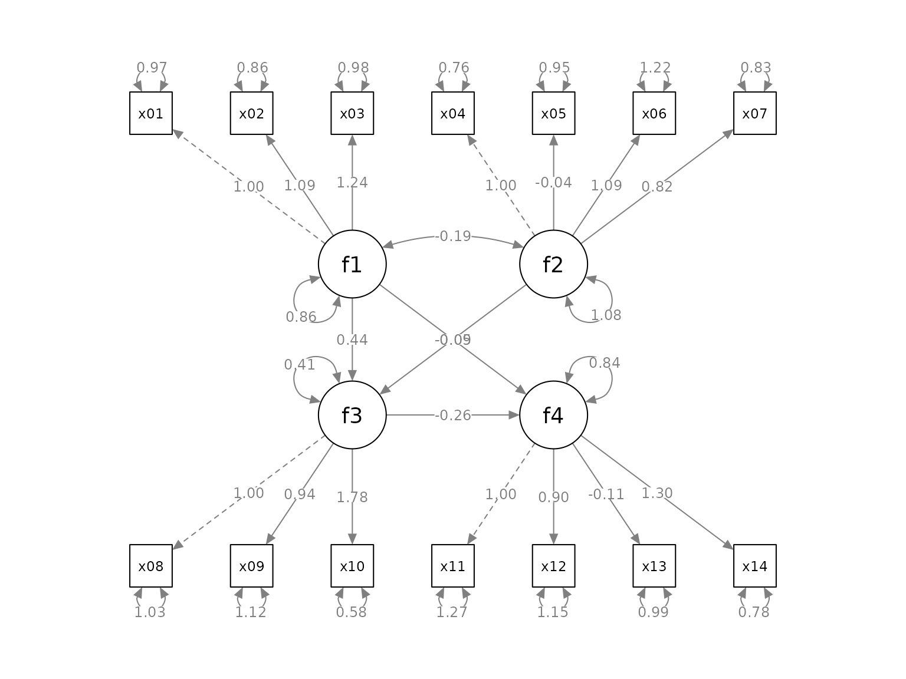
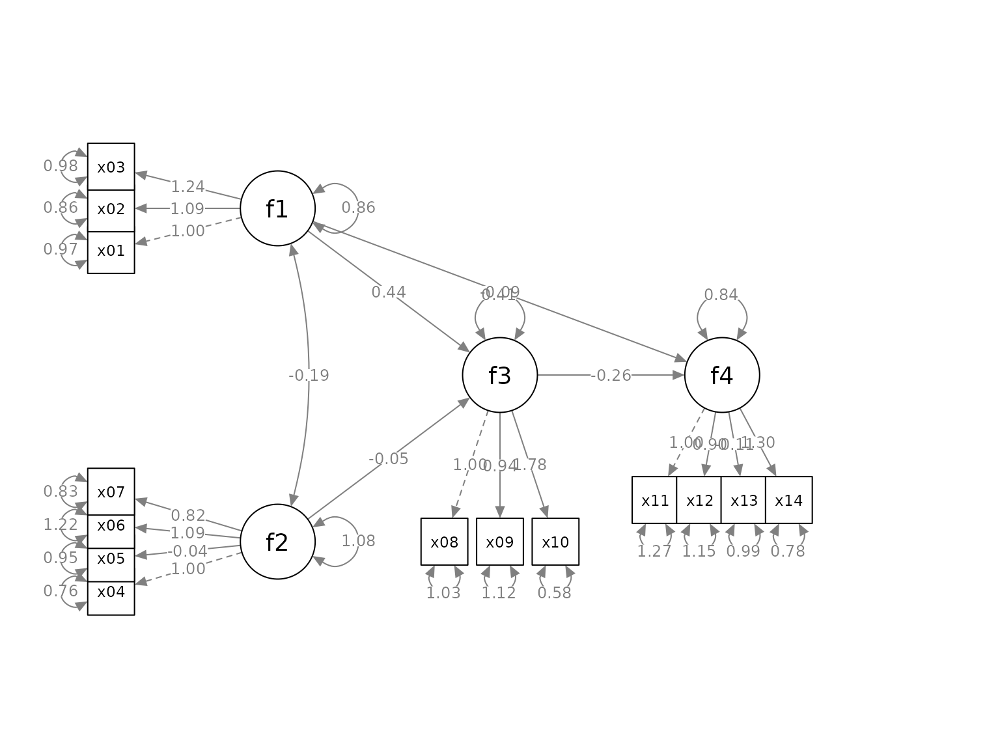

Quick Start To set_sem_layout
Shu Fai Cheung & Mark Hok Chio Lai
2021-09-22
Source:vignettes/quick_start_sem.Rmd
quick_start_sem.RmdIntroduction
The semptools package contains functions that post-process an output from semPlot::semPaths(), to help users to customize the appearance of the graphs generated by semPlot::semPaths(). For the introduction to functions for doing very specific tasks, such as moving the parameter estimate of a path or rotating the residual of a variable, please refer to vignette("semptools"). The present guide focuses on how to use set_sem_layout() to configure various aspects of a semPaths graph generated for a typical structural equation model (SEM) with latent factors. For configuring the layout of a confirmatory factor analysis (CFA) model with no structural path between factors, please refer to the vignette("quick_start_cfa").
The Initial semPaths Graph
Let us consider an SEM model. We will use sem_example, a sample CFA dataset from semptools with 14 variables for illustration.
library(semptools)
head(round(sem_example, 3), 3)
#> x01 x02 x03 x04 x05 x06 x07 x08 x09 x10 x11
#> 1 2.861 2.289 3.381 0.191 0.095 -0.395 -0.060 1.320 2.807 2.330 2.069
#> 2 -0.246 -1.299 -0.371 2.232 -0.419 -0.565 -0.162 3.050 1.513 1.777 2.991
#> 3 0.079 0.067 0.323 -3.043 -1.093 -0.626 -1.961 -4.908 -2.048 -3.190 1.403
#> x12 x13 x14
#> 1 0.569 -0.808 1.989
#> 2 2.125 0.767 1.539
#> 3 1.888 1.356 1.107This is the SEM model to be fitted:
mod <-
'f1 =~ x01 + x02 + x03
f2 =~ x04 + x05 + x06 + x07
f3 =~ x08 + x09 + x10
f4 =~ x11 + x12 + x13 + x14
f3 ~ f1 + f2
f4 ~ f1 + f3
'Fitting the model using lavaan::sem():
library(lavaan)
#> This is lavaan 0.6-9
#> lavaan is FREE software! Please report any bugs.
fit <- lavaan::sem(mod, cfa_example)This is the plot from semPaths:
library(semPlot)
p <- semPaths(fit, whatLabels="est",
sizeMan = 5,
node.width = 1,
edge.label.cex = .75,
style = "ram",
mar = c(5, 5, 5, 5))
We will see how set_sem_layout() can be used to do the following tasks to post-process the graph:
Change the order of the indicators.
Assign factors to indicators manually.
Specify how to set the approximate positions of the factors.
Specify how to place the indicators of a factor.
Adjust the placement of the indicators relative to their corresponding factors.
Move the loadings along the paths from factors to indicators.
Assign Indicators to Factors
This section describes how to set the order of the indicators, assign them to factors, and specify the approximate positions of the factors.
Suppose we want to do this:
-
We would like to assign the indicators to the factors this way:
x04,x05,x06, andx07forf2.x01,x02, andx03forf1.x11,x12,x13, andx14forf4.x08,x09, andx10forf3.
To do this, we create two vectors, one for the argument indicator_order and the other for the argument indicator_factor.
-
indicator_orderis a string vector with length equal to the number of indicators, with the desired order if the indicators are placed above the corresponding factors. In this example, it will be like this:
indicator_order <- c("x04", "x05", "x06", "x07",
"x01", "x02", "x03",
"x11", "x12", "x13", "x14",
"x08", "x09", "x10")-
indicator_factoris a string vector with length equal to the number of indicators. The elements are the names of the latent factors, denoting which factor each indicator will be assigned to:
indicator_factor <- c( "f2", "f2", "f2", "f2",
"f1", "f1", "f1",
"f4", "f4", "f4", "f4",
"f3", "f3", "f3")To specify the locations of the factors, we need two more arguments, factor_layout and factor_point_to.
factor_layout is a matrix of arbitrary size, with either NA or the name of a factor. For example:
This sets up a 3-by-3 grid, with f1 on the top left, f2 on the bottom left, f3 in the center, and f4 on the right of f3. Each factor must be in one and only one cell of this matrix.
Note that a column or row can contain only NA, to increase the vertical or horizontal distance between factors.
The helper function layout_matrix() can also be used to create the matrix to be used in factor_layout (see vignette("layout_matrix") on how to use layout_matrix()):
factor_layout <- layout_matrix(f1 = c(1, 1),
f2 = c(3, 1),
f3 = c(2, 2),
f4 = c(2, 3))
factor_layout
#> [,1] [,2] [,3]
#> [1,] "f1" NA NA
#> [2,] NA "f3" "f4"
#> [3,] "f2" NA NAfactor_point_to is a matrix of the size as factor_layout, with either NA or one of these: “down”, “left”, “up”, or “right”, to indicate the direction that a factor “points to” its indicator. For example:
factor_point_to <- matrix(c("left", NA, NA,
NA, "down", "down",
"left", NA, NA), byrow = TRUE, 3, 3)f1 and f2 will point to the left (i.e., indicators on the left), f3 and f4 will point downwards.
layout_matrix() can also be used to create this matrix:
factor_point_to <- layout_matrix(left = c(1, 1),
left = c(3, 1),
down = c(2, 2),
down = c(2, 3))
factor_point_to
#> [,1] [,2] [,3]
#> [1,] "left" NA NA
#> [2,] NA "down" "down"
#> [3,] "left" NA NAIn sum, the set_sem_layout() function needs at least these arguments:
semPaths_plot: ThesemPathsplot.indicator_order: The vector for the order of indicators.indicator_factor: The vector for assigning indicators to latent factors.factor_layout: The position of the factors on a grid.factor_point_to: The placement of the indicators.
They do not have to be named if they are in this order.
We now use set_sem_layout() to post-process the graph:
p2 <- set_sem_layout(p,
indicator_order = indicator_order,
indicator_factor = indicator_factor,
factor_layout = factor_layout,
factor_point_to = factor_point_to)
plot(p2)
Move Indicators
The placement of the indicators are too close to the indicators and to neighboring indicators. We can adjust the relative position in two ways.
“Push” the indicators away
We can use the argument indicator_push to push the indicators of a factor away from it. The argument needs a named vector. The name is the factor of which the indictors will be “pushed”, and the value is how “hard” the push is: the multiplier to the distance from the factor to the indicators. For example:
indicator_push <- c(f3 = 2,
f4 = 1.5,
f1 = 1.5,
f2 = 1.5)This vector will double the distance between the indicators of f3 and their factors, and multiply the distance between the indicators of f4, f1, and f2 and their factors by 1.5. If push is less than 1, the indicators will be “pulled” towards their factors.
p2 <- set_sem_layout(p,
indicator_order = indicator_order,
indicator_factor = indicator_factor,
factor_layout = factor_layout,
factor_point_to = factor_point_to,
indicator_push = indicator_push)
plot(p2)
“Spread” out the indicators
We can use the argument indicator_spread to spread out the indicators of a factor, increasing the distance between the indicators. The argument needs a named vector. The name is the factor of which the indicators will be spread out. The value is the multiplier to the distance between neighboring indicators. For example:
indicator_spread <- c(f1 = 2,
f2 = 1.5,
f4 = 1.5)This vector will double the distance between the indicators of f1, and multiply the distance between the indicators of f2 and f4. and its indicators by 1.5. If spread is less than 1, the indicators will be squeezed towards each others.
p2 <- set_sem_layout(p,
indicator_order = indicator_order,
indicator_factor = indicator_factor,
factor_layout = factor_layout,
factor_point_to = factor_point_to,
indicator_push = indicator_push,
indicator_spread = indicator_spread)
plot(p2)
Move the Loadings
We can move the loadings of indicators along the paths by the argument loading_position. If we supply one single number, from 0 to 1, this number will be used for the position of all loadings. A value of .5 place the loadings on the middle of the paths. Larger the value, closer the loadings to the indicators. Smaller the value, closer the loadings to the factors.
We can also use a named vector to specify the positions of indicators for each factor.In each element, the name if the factor whose loadings will be moved. The value is the positions of its loadings. The default is .50. We only need to specify the positions for factors to be changed from .50 to other values. For example:
loading_position <- c(f2 = .7,
f3 = .8,
f4 = .8)
p2 <- set_sem_layout(p,
indicator_order = indicator_order,
indicator_factor = indicator_factor,
factor_layout = factor_layout,
factor_point_to = factor_point_to,
indicator_push = indicator_push,
indicator_spread = indicator_spread,
loading_position = loading_position)
plot(p2)
Pipe
Like other functions in semptools, the set_sem_layout() function can be chained with other functions using the pipe operator, %>%, from the package magrittr, or the native pipe operator |> available since R 4.1.x. Suppose we want to mark the significant test results for the free parameters using mark_sig(), and use set_curve() to change the curvature of f1 ~~ f2 covariances and f4 ~ f1 paths (we push and spread some indicators to make room for the asterisks, and change the orientation of f4 to up):
# If R version >= 4.1.0
p2 <- set_sem_layout(p,
indicator_order = indicator_order,
indicator_factor = indicator_factor,
factor_layout = factor_layout,
factor_point_to = factor_point_to,
indicator_push = indicator_push,
indicator_spread = indicator_spread,
loading_position = loading_position) |>
set_curve(c("f2 ~~ f1" = -1,
"f4 ~ f1" = 1.5)) |>
mark_sig(fit)
plot(p2)